Grupo 2 · Arturito R2D2 · potencia v0.7 · 10/10/2026
Potencia: cable por cable
La LiPo 3S alimenta los motores directo, sin buck; el power bank, la Pi y las ESP32. Esta versión saca la térmica CHINT: el ON/OFF de los motores es el selector WEG y la protección, el fusible de 20 A. Cada carga toma su par rojo/negro de dos borneras (estrella): si un cable se suelta, no se cae todo lo que viene después. Resumen general en conexiones.html; pines de señal en placa_s3.html y placa_wroom.html.
Diagrama de cableado
+12 V LiPoGND (negro)salida a motor5 V USB / 6 V servosmediciónEN y seta
Los saltos (⌒) son cruces sin contacto. EN-T y EN-B son la misma señal donde aparece el rótulo: no se dibujan los cables para no cruzar las borneras. La lógica de los IBT-2 (VCC 5 V, GND y PWM) sale de cada ESP32 y está en las páginas de las placas. Los números son los de las fichas de abajo.
Qué se conecta
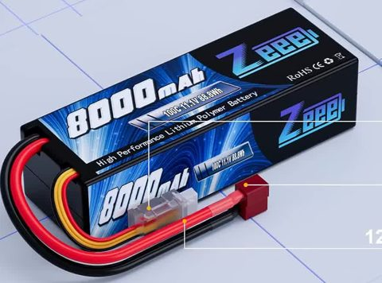
1 · LiPo Zeee 3S 8000 mAh
Batería de los motores. 100C y sin BMS: un corto entrega cientos de amperes. Se carga solo con el balanceador, fuera del robot.
Sale: + rojo y − negro de 12 AWG → XT60 hembra. Balanceo JST-XH: libre, solo para cargar y medir celdas.
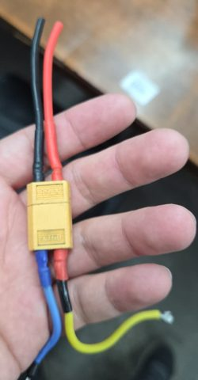
2 · Par de XT60
Reemplaza al Deans (no hay Deans hembra). La hembra (contactos tapados) va soldada a la batería; el macho, del lado del robot.
Respetar el + marcado en el plástico. Termocontraíble en cada pata.
sin foto (ya lo tenés)
3 · Fusible de auto 20 A
La única protección contra un corto. Los de lámina son para continua hasta 32 V. Va en el cable rojo, lo más pegado posible al XT60 macho: el tramo antes del fusible no está protegido.
Entra: + del XT60 macho. Sale: borne 3 del selector.
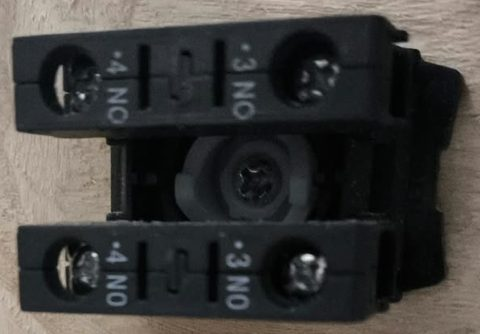
4 · Selector WEG (2 bloques BC10)
ON/OFF de los motores (H8); reemplaza a la térmica CHINT. Trae dos contactos NA 3-4 (foto de atrás): girado = cerrados. Se ponen en paralelo (3 con 3 y 4 con 4, con un puente corto del mismo cable grueso) para repartir la corriente: 10 A cada uno.
Entra a los 3 desde el fusible, sale de los 4 a la bornera +12 V. Accionarlo con los motores quietos (en paralelo no corta mejor, solo conduce más); para una emergencia está la seta.
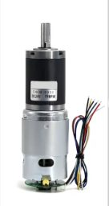
5-6 · IBT-2 y motores de tracción
Cada IBT-2 con su propio par rojo/negro desde la bornera (estrella, no en cadena). Cables del motor trenzados y cortos.
B+ ← bornera +12 V · B− ← bornera GND · M+/M− → motor (negro y rojo del motor) · R_EN+L_EN ← EN-T · VCC/GND lógica y PWM: ver placa_s3.html.
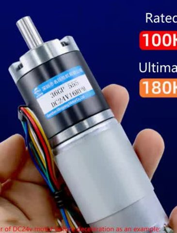
7-9 · IBT-2 y motores del brazo
J1, J2 y J3, un IBT-2 cada uno. EN común en la WROOM 23 (EN-B), con 10 k a GND. J2 y J3 no se sostienen: el brazo cae al desarmar.
B+ / B− desde la bornera con 18 AWG · M+/M− al motor · PWM y encoders: ver placa_wroom.html.
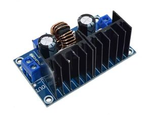
10 · Buck 3 (XL4016 LIZAO)
12 → 6 V para los servos. Ajustarlo sin carga con el multímetro (6,0 V) y la corriente en 5 A antes de conectar los servos.
IN+ / IN− ← bornera · OUT+ / OUT− → riel de 6 V de la placa de la WROOM.
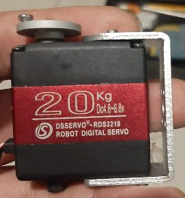
Servos RDS3218 de la pinza
Apertura y giro J4. Comparten GND con la WROOM (por la bornera GND).
Rojo ← 6 V del buck 3 · marrón → GND · señal ← WROOM.
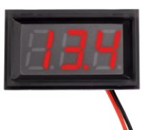
12 · Voltímetro LED
Muestra la tensión de la LiPo con los motores encendidos (va después del selector: apagado, no descarga la batería).
Rojo ← bornera +12 V · negro ← bornera GND. Parar a 10,5 V.
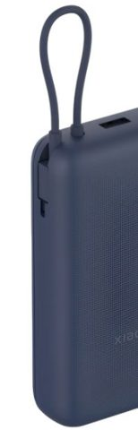
14 · Power bank Xiaomi PB2030MI
Alimenta la Pi y, a través de ella, las dos ESP32. Su negativo no se une al de la LiPo por cable: queda común por el USB y el GND de las ESP32.
Cable USB-C propio → Pi 5. Una sola salida; no cargarlo mientras alimenta.
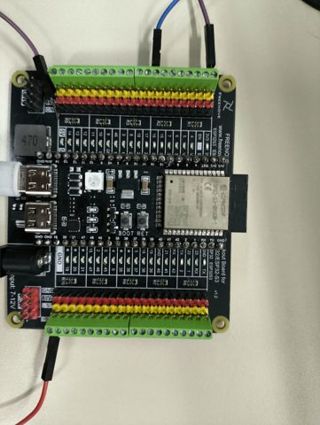
16 · ESP32-S3 (base)
Mide la batería (GPIO 1 por el divisor) y maneja el EN de la tracción (GPIO 38, pasa por la seta).
GND → bornera GND con un cable propio (sin esto los PWM no tienen referencia).
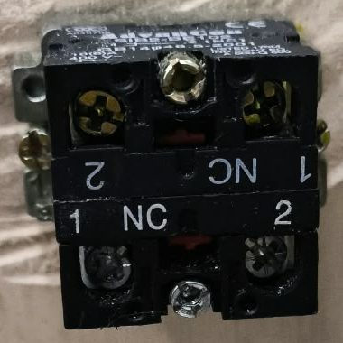
18 · Seta AdvanCon (2 bloques NC)
Dos bloques NC 1-2 apilados (foto de atrás), separados entre sí. El de arriba corta el EN de la tracción por hardware, aunque se cuelgue el firmware (los motores quedan en rueda libre: no frena). El de abajo avisa a la S3.
NC A: GPIO 38 ↔ nodo EN-T (10 k a GND) · NC B: GPIO 47 ↔ GND (100 nF a GND en el pin). Verificar con el tester: suelta = continuidad, apretada = abierto.
Cables
Tramo
Calibre
Color
Notas
LiPo → XT60 → fusible → selector → bornera
12-14 AWG
rojo / negro
Lo más corto posible (< 30 cm). Pasa toda la corriente: hasta 20 A.
Bornera → IBT-2 de tracción (B+/B−)
14-16 AWG
rojo / negro
Un par por driver; hasta 10 A trabado.
IBT-2 de tracción → motor
16 AWG
los del motor
Trenzados, lejos de los cables de encoder.
Bornera → IBT-2 del brazo, buck 3
18 AWG
rojo / negro
1,3 A nominal cada motor; el buck pide ~3 A a 12 V con los dos servos trabados.
GND de la S3 y de la WROOM → bornera GND
18 AWG
negro
Un cable propio por placa. Sin esto los PWM no tienen referencia.
Voltímetro, divisor, EN, seta
22-26 AWG
cualquiera
Señal: corriente de mA.
Cambiar el Deans por el XT60
Cortar de a un cable. Si la pinza toca los dos a la vez, hace un corto con una batería de 100C sin BMS.
LiPo a media carga (~11,4 V), mesa sin objetos metálicos sueltos.
Cortar el rojo pegado al Deans y aislar la punta con cinta. Recién después, el negro.
Meter el termocontraíble en cada cable antes de soldar.
Pelar ~5 mm, estañar el cable y la copa del XT60 hembra. Si la hembra ya trae cable, desoldarlo y soldar directo el de la LiPo (una unión menos).
Rojo al terminal marcado + en el plástico. Soldar de a uno, con la otra punta todavía aislada.
Correr el termocontraíble y calentarlo. Medir con el tester en el XT60: + rojo, ~11,4 V.
El macho va al portafusible del lado del robot, con el cable más corto posible.
Orden de armado y primera prueba
Armar el tronco sin la LiPo: XT60 macho → fusible → selector (3-4) → bornera +; negro → bornera GND.
Con el tester en continuidad: selector en OFF, + y GND de la bornera abiertos; en ON, la bornera + tiene continuidad con el + del XT60. Entre + y GND, nunca continuidad.
Ajustar el buck 3 a 6,0 V sin carga (con una fuente de laboratorio o con la LiPo y nada más conectado).
Conectar voltímetro, capacitores (banda − al GND) y el divisor. Selector en OFF, enchufar la LiPo: el voltímetro apagado. ON: tiene que marcar la tensión de la LiPo. Medir el GPIO 1 del divisor: ≤ 2,7 V.
Selector en OFF. Conectar los IBT-2 de tracción y sus motores; GND de la S3 a la bornera; EN por la seta.
Power bank → Pi → S3. Ruedas en el aire, selector en ON, armar y velocidad baja. Apretar la seta: las ruedas se sueltan.
Después, uno por vez: IBT-2 del brazo, buck 3 y servos.
Pendiente
Portafusible para el fusible de 20 A, si no vino con él.